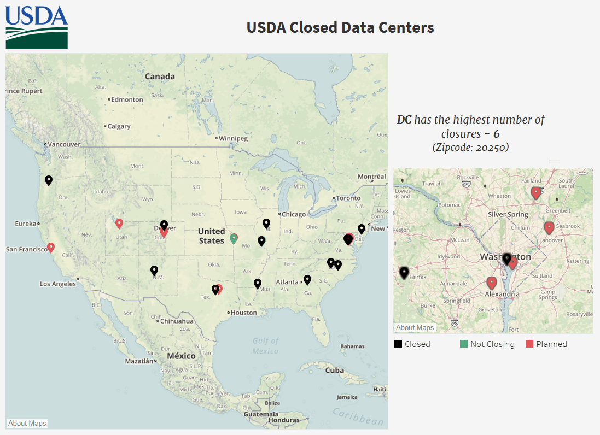

Will assist the strategic planning activities of federal agencies.
This CoE will assist agencies with the development of a unified and optimized IT infrastructure, leveraging federally owned data centers, cloud computing services, and commercial data centers (e.g. co-location).
Service Offerings
- Architecture assessments
- Optimization planning
- Network consolidation
- Data center consolidation
- New business models e.g. co-location
Accomplishments
- Completed data collection for cost benefit analysis for the National Finance Center data center (per Public Law No: 115-141 Title VII §702) (April 2018)
- Developed methodology to calculate the real estate value of data closures for the USDA data center portfolio (April 2018)
- Of the first 19 closed, data received to date shows an estimated cost savings of 6.9-8.5M; (May 2018)
- Held a two-day workshop with Forest Service’s Geospatial Technology and Applications Center(FS-GTAC) and Farm Service Agency Aerial Photography Field Office (FSA-APFO)(May 2018)
- Completed data center site inspections in Dallas, TX, Albany, CA and Salt Lake City, UT (May 2018)
- Created and submitted a Cost Assessment Analysis on FS-GTAC in Salt Lake City, UT (May 2018)
Latest Updates
May 17, 2018
IT Infrastructure Optimization CoE is supporting the USDA with their consolidation of data centers from 39 to 2. With accelerated closure planning and data center site visits, USDA has already met their closure goal for FY18 by closing 18 data centers. The CoE and USDA will continue to accelerate closures by helping agencies develop their migration planning/project plans for the remaining data centers scheduled to close in FY19. The CoE is supporting USDA mission areas by conducting application rationalization assessments on applications impacted by closures. The IT Infrastructure Optimization CoE is working with agency stakeholders, assessing the value of these closures to USDA, and providing executive briefings on the progress USDA is making towards its modernization work.

Data Center Closures Across the U.S.